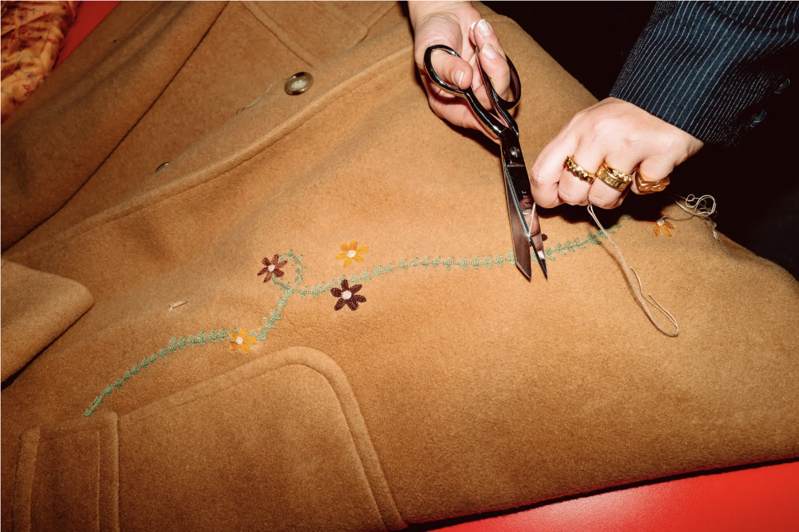
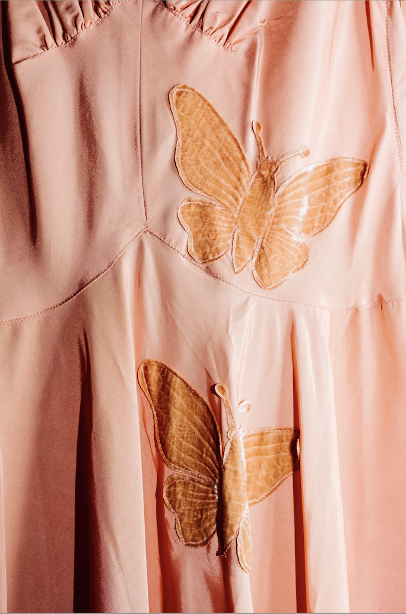
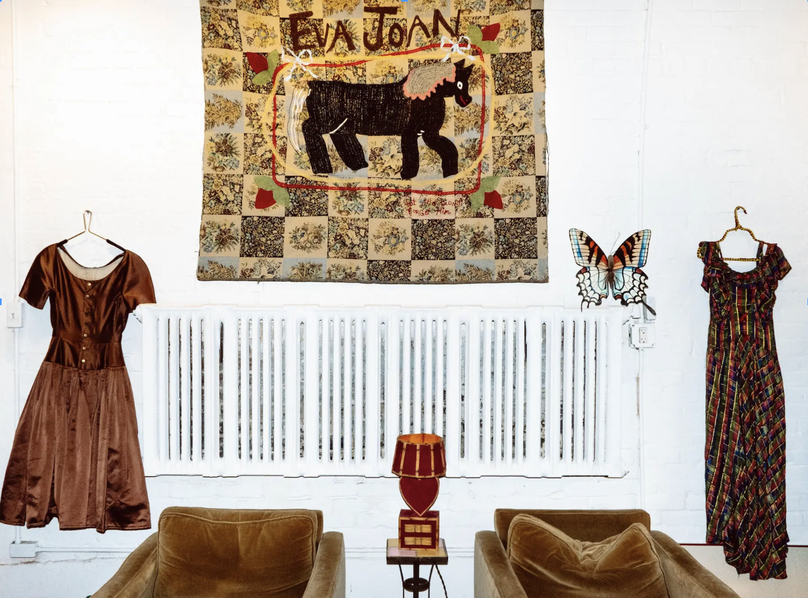

At Eva Joan, a clothing repair shop in the West Village, tears, spots and stains are transformed, rather than merely repaired.
Emma Orwell, 2023
To most, the diagnosis would sound dire. The delicate silk material of a jacket that had come into Eva Joan, a repair shop in the West Village, had “shattered.”
On a recent winter afternoon, Emma Villeneuve, a co-owner of the store, was in a back sewing room looking over the work that had been done to fix it. A matching fabric had been sourced to address the areas that were the weakest, she said, and the shop’s tailors had patched and mended both the inside and exterior of the jacket. Then they had satin-stitched buttonholes, sewn on the buttons and whipstitched the pocket.
“The client wanted it to look integrated, and that it didn’t look like a contrasting fabric,” Bjorn Eva Park, Ms. Villeneuve’s business partner, chimed in. Elsewhere in the room, a wine stain on a blue dress had been remedied with an embroidered flower.
The pair opened Eva Joan in 2021, in a tiny space next door to Casa Magazines. (“We slipped a note under the door and signed our lease on a cigarette box,” Ms. Park recalled.) Neither had professional experience as a tailor. Ms. Park, 31, worked in production design for fashion shoots, and Ms. Villeneuve, 32, did set design for films and commercials. But they had each tinkered on their own sewing projects and had in mind a kind of business they hadn’t seen before — one where mending, alterations, embroidery and education could be brought under the same roof. They also wanted to sell one-of-a-kind pieces and hard-to-come-by fabrics for others to pursue their own projects.
The store’s name is a combination of their grandmothers’ names.

They wanted to show that repair work didn’t have to be “quick and dirty,” Ms. Park said, but instead could be an “extravagant” act. A job as small as darning a pair of wool socks, for instance, could have a little extra care — and flair — put into it.
Such mending jobs were also a way to salvage supposedly unsalvageable items languishing in the back of closets. Some of those garments can be extremely personal to the customers who come into Eva Joan, which in 2023 moved to a larger storefront at 28 Jane Street.
“What we’re doing is not for the faint of heart, because these are people’s stories,” Ms. Park said. Ms. Villeneuve agreed: “It’s a very intimate relationship; trust is required.”
Before starting in on a repair, Eva Joan’s team — the store has about a half-dozen employees — holds consultations. They ask customers about color and texture preferences (corduroy, yes! Butter-yellow, no!); how they like to wear their clothes (loosely? High-waisted?); the provenance of the garment; and whether it carries sentimentality. Some clients want a repair with seamlessness and invisibility, while others leave Eva Joan to completely overhaul a garment as it sees fit.
Over the years, the shop has become known for its whimsical approach to embroidery and embellishment: Rather than trying to hide that an article of clothing has been mended, it sometimes loudly declares it. Ribbons and patches, silhouettes of horses and flowers are often telltale signs a garment has been repaired at Eva Joan. Among the store’s fans is the nearly 100-year-old fashion star Dorothy Wiggins, who owns a tweed coat that the shop embroidered with a pair of pink ballet slippers.
One of their more challenging projects, Ms. Park and Ms. Villeneuve said, involved a client with blindness who brought in ties he wanted turned into a suit jacket, making edits based on touch.
“There is no common customer just like there is no common project,” Ms. Villeneuve said.
Orders can run from $8 for a button swap up to $450 for something like relining. The typical turnaround time is about two weeks, depending on how elaborate the customer’s request. It’s all cataloged and tallied by hand, one of the shop’s romantic anachronisms.
“We’re going against the grain in some ways because we are asking for peoples’ attention; disconnection is how capitalism thrives, and we’re telling people to wait a long time, to spend money and invest in things that people discard,” Ms. Park said. “It’s pretty counterculture, and, we believe, way more fulfilling: The reward is so much higher when you reinvest in something.”
As many people confront the reality of clothing waste and the environmental damage wrought by cheap, mass-produced fashion, Eva Joan joins spots in New York like the Bode Tailor Shop on the Lower East Side of Manhattan; the Consistency Project in Boerum Hill, Brooklyn; Grace Land in Ridgewood, Queens; and Pedal, a mobile alterations shop in a former roasted peanuts pushcart, which are introducing a younger generation to clothing repair.
These ventures may also feed a desire among some for an item that no one else has in a retail landscape dominated by fast fashion, said Ruby Redstone, 29, a fashion historian.
“For as long as we’ve had clothes we’ve had mending, and it’s a very recent phenomenon that we’re not mending our clothes,” Ms. Redstone said. “It’s been a swift decline in the 21st century, but throughout the 20th century, we saw a lot of people losing mending knowledge as clothes became more disposable.”
The menu of services Eva Joan offers, paired with its aesthetic lens, she added, “shows that mending something makes it better, more personal, and puts aside our fears of mending making something look damaged, old or cheapened.”
Ms. Park and Ms. Villeneuve are hoping to spread their ethos. The shop offers open studio craft nights, workshops and talks, sometimes given by Ms. Redstone, a frequent collaborator. Last year she led helped out with a tutorial on how to embroider bloomers. Recently, the owners hosted a retreat in Tuscany, Italy, where about a dozen attendees spent a weekend learning mending techniques.

For now, though, Eva Joan is still a neighborhood spot.

“I moved to the neighborhood 30 years ago, so I’ve really seen the neighborhood change,” said one resident, Susie Lopez, 56, who works in philanthropy, “so many specialized stores, like rare books stores, all these beautiful little treasures that left the Village.”
When she saw Eva Joan was opening on Jane Street, she ran over with Champagne. “I thought what they were doing was so relevant, so needed,” Ms. Lopez said. “Something with quality and uniqueness coming back to the Village.”
Since then, she has worked with the Eva Joan team on dozens of projects, including turning children’s dungarees into a bag and having 35 vintage bandannas monogrammed for a literary award Ms. Lopez founded for teen creative writers.
“Sometimes I like to play a game to see if I can bring in something they can’t resurrect,” she said. So far, they have rejected only one item, a flapper dress from the 1920s: “They felt it wasn’t right to mess with.”